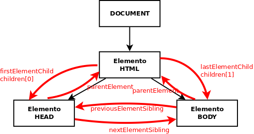

Document Object Model (DOM)
Table of Contents generated with DocToc
Introducción
La mayoría de las veces que programamos con Javascript es para que se ejecute en una página web mostrada por el navegador. En este contexto tenemos acceso a ciertos objetos que nos permiten interactuar con la página (DOM) y con el navegador (Browser Object Model, BOM).
El DOM es una estructura en árbol que representa todos los elementos HTML de la página y sus atributos. Todo lo que contiene la página se representa como nodos del árbol y mediante el DOM podemos acceder a cada nodo, modificarlo, eliminarlo o añadir nuevos nodos de forma que cambiamos dinámicamente la página mostrada al usuario.
La raíz del árbol DOM es document y de este nodo cuelgan el resto de elementos HTML. Cada uno constituye su propio nodo y tiene subnodos con sus atributos, estilos y elementos HTML que contiene.
Por ejemplo, la página HTML:
<!DOCTYPE html>
<html>
<head>
<meta charset="utf-8">
<title>Página simple</title>
</head>
<body>
<p>Esta página es <strong>muy simple</strong></p>
</body>
</html>

Cada etiqueta HTML suele originar 2 nodos:
* Element: correspondiente a la etiqueta
* Text: correspondiente a su contenido (lo que hay entre la etiqueta y su par de cierre)
Cada nodo es un objeto con sus propiedades y métodos.
El ejemplo anterior está simplificado porque sólo aparecen los nodos de tipo elemento pero en realidad también generan nodos los saltos de línea, tabuladores, espacios, comentarios, etc. En el siguiente ejemplo podemos ver TODOS los nodos que realmente se generan. La página:
<!DOCTYPE html>
<html>
<head>
<title>My Document</title>
</head>
<body>
<h1>Header</h1>
<p>
Paragraph
</p>
</body>
</html>

Acceso a los nodos
Los principales métodos para acceder a los diferentes nodos son:
* .getElementById(id): devuelve el nodo con la id pasada. Ej.:
let nodo = document.getElementById('main'); // nodo contendrá el nodo cuya id es _main_
let nodos = document.getElementsByClassName('error'); // nodos contendrá todos los nodos cuya clase es _error_
let nodos = document.getElementsByTagName('p'); // nodos contendrá todos los nodos de tipo _<p>_
let nodo = document.querySelector('p.error'); // nodo contendrá el primer párrafo de clase _error_
let nodos = document.querySelectorAll('p.error'); // nodos contendrá todos los párrafos de clase _error_
También tenemos 'atajos' para obtener algunos elementos comunes:
* document.documentElement: devuelve el nodo del elemento \
* document.head: devuelve el nodo del elemento \
* document.body: devuelve el nodo del elemento \
* document.title: devuelve el nodo del elemento \</em>
* <code>document.link</code>: devuelve una colección con todos los hiperenlaces del documento
* <code>document.anchor</code>: devuelve una colección con todas las anclas del documento
* <code>document.forms</code>: devuelve una colección con todos los formularios del documento
* <code>document.images</code>: devuelve una colección con todas las imágenes del documento
* <code>document.scripts</code>: devuelve una colección con todos los scripts del documento</p>
<blockquote>
<p>EJERCICIO: Para hacer los ejercicios de este tema descárgate <a href="../ejercicios/ejemplos/ejemploDOM.html">esta página de ejemplo</a> y ábrela en tu navegador. Obtén por consola, al menos de 2 formas diferentes:
- El elemento con id 'input2'
- La colección de párrafos
- Lo mismo pero sólo de los párrafos que hay dentro del div 'lipsum'
- El formulario (ojo, no la colección con el formulario sino sólo el formulario)
- Todos los inputs
- Sólo los inputs con nombre 'sexo'
- Los items de lista de la clase 'important' (sólo los LI)</p>
</blockquote>
<h2 id="acceso-a-nodos-a-partir-de-otros">Acceso a nodos a partir de otros<a class="headerlink" href="#acceso-a-nodos-a-partir-de-otros" title="Permanent link">¶</a></h2>
<p>En muchas ocasiones queremos acceder a cierto nodo a partir de uno dado. Para ello tenemos los siguientes métodos que se aplican sobre un elemento del árbol DOM:
* <code>elemento.parentElement</code>: devuelve el elemento padre de <em>elemento</em>
* <code>elemento.children</code>: devuelve la colección con todos los elementos hijo de <em>elemento</em> (sólo elementos HTML, no comentarios ni nodos de tipo texto)
* <code>elemento.childNodes</code>: devuelve la colección con todos los hijos de <em>elemento</em>, incluyendo comentarios y nodos de tipo texto por lo que no suele utilizarse
* <code>elemento.firstElementChild</code>: devuelve el elemento HTML que es el primer hijo de <em>elemento</em>
* <code>elemento.firstChild</code>: devuelve el nodo que es el primer hijo de <em>elemento</em> (incluyendo nodos de tipo texto o comentarios)
* <code>elemento.lastElementChild</code>, <code>elemento.lastChild</code>: igual pero con el último hijo
* <code>elemento.nextElementSibling</code>: devuelve el elemento HTML que es el siguiente hermano de <em>elemento</em>
* <code>elemento.nextSibling</code>: devuelve el nodo que es el siguiente hermano de <em>elemento</em> (incluyendo nodos de tipo texto o comentarios)
* <code>elemento.previousElementSibling</code>, <code>elemento.previousSibling</code>: igual pero con el hermano anterior
* <code>elemento.hasChildNodes</code>: indica si <em>elemento</em> tiene o no nodos hijos
* <code>elemento.childElementCount</code>: devuelve el nº de nodos hijo de <em>elemento</em></p>
<p><strong>IMPORTANTE</strong>: a menos que me interesen comentarios, saltos de página, etc <strong>siempre</strong> debo usar los métodos que sólo devuelven elementos HTML, no todos los nodos.</p>
<p></p>
<blockquote>
<p>EJERCICIO: Siguiento con la <a href="../ejercicios/ejemplos/ejemploDOM.html">página de ejemplo</a> obtén desde la consola, al menos de 2 formas diferentes:
- El primér párrafo que hay dentro del div 'lipsum'
- El segundo párrafo de 'lipsum'
- El último item de la lista
- La label de 'Escoge sexo'</p>
</blockquote>
<h3 id="propiedades-de-un-nodo">Propiedades de un nodo<a class="headerlink" href="#propiedades-de-un-nodo" title="Permanent link">¶</a></h3>
<p>Las principales propiedades de un nodo son:
* <code>elemento.innerHTML</code>: todo lo que hay entre la etiqueta que abre <em>elemento</em> y la que lo cierra, incluyendo otras etiquetas HTML. Por ejemplo si <em>elemento</em> es el nodo <code><p>Esta página es <strong>muy simple</strong></p></code>
<div class="highlight"><pre><span></span><code><a id="__codelineno-7-1" name="__codelineno-7-1" href="#__codelineno-7-1"></a><span class="kd">let</span><span class="w"> </span><span class="nx">contenido</span><span class="w"> </span><span class="o">=</span><span class="w"> </span><span class="nx">elemento</span><span class="p">.</span><span class="nx">innerHTML</span><span class="p">;</span><span class="w"> </span><span class="c1">// contenido='Esta página es <strong>muy simple</strong>'</span>
</code></pre></div>
* <code>elemento.textContent</code>: todo lo que hay entre la etiqueta que abre <em>elemento</em> y la que lo cierra, pero ignorando otras etiquetas HTML. Siguiendo con el ejemplo anterior:
<div class="highlight"><pre><span></span><code><a id="__codelineno-8-1" name="__codelineno-8-1" href="#__codelineno-8-1"></a><span class="kd">let</span><span class="w"> </span><span class="nx">contenido</span><span class="w"> </span><span class="o">=</span><span class="w"> </span><span class="nx">elemento</span><span class="p">.</span><span class="nx">textContent</span><span class="p">;</span><span class="w"> </span><span class="c1">// contenido='Esta página es muy simple'</span>
</code></pre></div>
* <code>elemento.value</code>: devuelve la propiedad 'value' de un \<input> (en el caso de un \<input> de tipo text devuelve lo que hay escrito en él). Como los \<inputs> no tienen etiqueta de cierre (\</input>) no podemos usar <em>.innerHTML</em> ni <em>.textContent</em>. Por ejemplo si <em>elem1</em> es el nodo <code><input name="nombre"></code> y <em>elem2</em> es el nodo <code><input tipe="radio" value="H">Hombre</code>
<div class="highlight"><pre><span></span><code><a id="__codelineno-9-1" name="__codelineno-9-1" href="#__codelineno-9-1"></a><span class="kd">let</span><span class="w"> </span><span class="nx">cont1</span><span class="w"> </span><span class="o">=</span><span class="w"> </span><span class="nx">elem1</span><span class="p">.</span><span class="nx">value</span><span class="p">;</span><span class="w"> </span><span class="c1">// cont1 valdría lo que haya escrito en el <input> en ese momento</span>
<a id="__codelineno-9-2" name="__codelineno-9-2" href="#__codelineno-9-2"></a><span class="kd">let</span><span class="w"> </span><span class="nx">cont2</span><span class="w"> </span><span class="o">=</span><span class="w"> </span><span class="nx">elem2</span><span class="p">.</span><span class="nx">value</span><span class="p">;</span><span class="w"> </span><span class="c1">// cont2="H"</span>
</code></pre></div></p>
<p>Otras propiedades:
* <code>elemento.innerText</code>: igual que <em>textContent</em>
* <code>elemento.focus</code>: da el foco a <em>elemento</em> (para inputs, etc). Para quitarle el foco <code>elemento.blur</code>
* <code>elemento.clientHeight</code> / <code>elemento.clientWidth</code>: devuelve el alto / ancho visible del <em>elemento</em>
* <code>elemento.offsetHeight</code> / <code>elemento.offsetWidth</code>: devuelve el alto / ancho total del <em>elemento</em>
* <code>elemento.clientLeft</code> / <code>elemento.clientTop</code>: devuelve la distancia de <em>elemento</em> al borde izquierdo / superior
* <code>elemento.offsetLeft</code> / <code>elemento.offsetTop</code>: devuelve los píxels que hemos desplazado <em>elemento</em> a la izquierda / abajo</p>
<blockquote>
<p>EJERCICIO: Obtén desde la consola, al menos de 2 formas:
- El innerHTML de la etiqueta de 'Escoge sexo'
- El textContent de esa etiqueta
- El valor del primer input de sexo
- El valor del sexo que esté seleccionado (difícil, búscalo por Internet)</p>
</blockquote>
<h2 id="manipular-el-arbol-dom">Manipular el árbol DOM<a class="headerlink" href="#manipular-el-arbol-dom" title="Permanent link">¶</a></h2>
<p>Vamos a ver qué métodos nos permiten cambiar el árbol DOM, y por tanto modificar la página:
* <code>document.createElement('etiqueta')</code>: crea un nuevo elemento HTML con la etiqueta indicada, pero aún no se añade a la página. Ej.:
<div class="highlight"><pre><span></span><code><a id="__codelineno-10-1" name="__codelineno-10-1" href="#__codelineno-10-1"></a><span class="kd">let</span><span class="w"> </span><span class="nx">nuevoLi</span><span class="w"> </span><span class="o">=</span><span class="w"> </span><span class="nb">document</span><span class="p">.</span><span class="nx">createElement</span><span class="p">(</span><span class="s1">'li'</span><span class="p">);</span>
</code></pre></div>
* <code>document.createTextNode('texto')</code>: crea un nuevo nodo de texto con el texto indicado, que luego tendremos que añadir a un nodo HTML. Ej.:
<div class="highlight"><pre><span></span><code><a id="__codelineno-11-1" name="__codelineno-11-1" href="#__codelineno-11-1"></a><span class="kd">let</span><span class="w"> </span><span class="nx">textoLi</span><span class="w"> </span><span class="o">=</span><span class="w"> </span><span class="nb">document</span><span class="p">.</span><span class="nx">createTextNode</span><span class="p">(</span><span class="s1">'Nuevo elemento de lista'</span><span class="p">);</span>
</code></pre></div>
* <code>elemento.appendChild(nuevoNodo)</code>: añade <em>nuevoNodo</em> como último hijo de <em>elemento</em>. Ahora ya se ha añadido a la página. Ej.:
<div class="highlight"><pre><span></span><code><a id="__codelineno-12-1" name="__codelineno-12-1" href="#__codelineno-12-1"></a><span class="nx">nuevoLi</span><span class="p">.</span><span class="nx">appendChild</span><span class="p">(</span><span class="nx">textoLi</span><span class="p">);</span><span class="w"> </span><span class="c1">// añade el texto creado al elemento LI creado</span>
<a id="__codelineno-12-2" name="__codelineno-12-2" href="#__codelineno-12-2"></a><span class="kd">let</span><span class="w"> </span><span class="nx">miPrimeraLista</span><span class="w"> </span><span class="o">=</span><span class="w"> </span><span class="nb">document</span><span class="p">.</span><span class="nx">getElementsByTagName</span><span class="p">(</span><span class="s1">'ul'</span><span class="p">)[</span><span class="mf">0</span><span class="p">];</span><span class="w"> </span><span class="c1">// selecciona el 1º UL de la página</span>
<a id="__codelineno-12-3" name="__codelineno-12-3" href="#__codelineno-12-3"></a><span class="nx">miPrimeraLista</span><span class="p">.</span><span class="nx">appendChild</span><span class="p">(</span><span class="nx">nuevoLi</span><span class="p">);</span><span class="w"> </span><span class="c1">// añade LI como último hijo de UL, es decir al final de la lista</span>
</code></pre></div>
* <code>elemento.insertBefore(nuevoNodo, nodo)</code>: añade <em>nuevoNodo</em> como hijo de <em>elemento</em> antes del hijo <em>nodo</em>. Ej.:
<div class="highlight"><pre><span></span><code><a id="__codelineno-13-1" name="__codelineno-13-1" href="#__codelineno-13-1"></a><span class="kd">let</span><span class="w"> </span><span class="nx">miPrimeraLista</span><span class="w"> </span><span class="o">=</span><span class="w"> </span><span class="nb">document</span><span class="p">.</span><span class="nx">getElementsByTagName</span><span class="p">(</span><span class="s1">'ul'</span><span class="p">)[</span><span class="mf">0</span><span class="p">];</span><span class="w"> </span><span class="c1">// selecciona el 1º UL de la página</span>
<a id="__codelineno-13-2" name="__codelineno-13-2" href="#__codelineno-13-2"></a><span class="kd">let</span><span class="w"> </span><span class="nx">primerElementoDeLista</span><span class="w"> </span><span class="o">=</span><span class="w"> </span><span class="nx">miPrimeraLista</span><span class="p">.</span><span class="nx">getElementsByTagName</span><span class="p">(</span><span class="s1">'li'</span><span class="p">)[</span><span class="mf">0</span><span class="p">];</span><span class="w"> </span><span class="c1">// selecciona el 1º LI de miPrimeraLista</span>
<a id="__codelineno-13-3" name="__codelineno-13-3" href="#__codelineno-13-3"></a><span class="nx">miPrimeraLista</span><span class="p">.</span><span class="nx">insertBefore</span><span class="p">(</span><span class="nx">nuevoLi</span><span class="p">,</span><span class="w"> </span><span class="nx">primerElementoDeLista</span><span class="p">);</span><span class="w"> </span><span class="c1">// añade LI al principio de la lista</span>
</code></pre></div>
* <code>elemento.removeChild(nodo)</code>: borra <em>nodo</em> de <em>elemento</em> y por tanto se elimina de la página. Ej.:
<div class="highlight"><pre><span></span><code><a id="__codelineno-14-1" name="__codelineno-14-1" href="#__codelineno-14-1"></a><span class="kd">let</span><span class="w"> </span><span class="nx">miPrimeraLista</span><span class="w"> </span><span class="o">=</span><span class="w"> </span><span class="nb">document</span><span class="p">.</span><span class="nx">getElementsByTagName</span><span class="p">(</span><span class="s1">'ul'</span><span class="p">)[</span><span class="mf">0</span><span class="p">];</span><span class="w"> </span><span class="c1">// selecciona el 1º UL de la página</span>
<a id="__codelineno-14-2" name="__codelineno-14-2" href="#__codelineno-14-2"></a><span class="kd">let</span><span class="w"> </span><span class="nx">primerElementoDeLista</span><span class="w"> </span><span class="o">=</span><span class="w"> </span><span class="nx">miPrimeraLista</span><span class="p">.</span><span class="nx">getElementsByTagName</span><span class="p">(</span><span class="s1">'li'</span><span class="p">)[</span><span class="mf">0</span><span class="p">];</span><span class="w"> </span><span class="c1">// selecciona el 1º LI de miPrimeraLista</span>
<a id="__codelineno-14-3" name="__codelineno-14-3" href="#__codelineno-14-3"></a><span class="nx">miPrimeraLista</span><span class="p">.</span><span class="nx">removeChild</span><span class="p">(</span><span class="nx">primerElementoDeLista</span><span class="p">);</span><span class="w"> </span><span class="c1">// borra el primer elemento de la lista</span>
<a id="__codelineno-14-4" name="__codelineno-14-4" href="#__codelineno-14-4"></a><span class="c1">// También podríamos haberlo borrado sin tener el padre con:</span>
<a id="__codelineno-14-5" name="__codelineno-14-5" href="#__codelineno-14-5"></a><span class="nx">primerElementoDeLista</span><span class="p">.</span><span class="nx">parentElement</span><span class="p">.</span><span class="nx">removeChild</span><span class="p">(</span><span class="nx">primerElementoDeLista</span><span class="p">);</span>
</code></pre></div>
* <code>elemento.replaceChild(nuevoNodo, viejoNodo)</code>: reemplaza <em>viejoNodo</em> con <em>nuevoNodo</em> como hijo de <em>elemento</em>. Ej.:
<div class="highlight"><pre><span></span><code><a id="__codelineno-15-1" name="__codelineno-15-1" href="#__codelineno-15-1"></a><span class="kd">let</span><span class="w"> </span><span class="nx">miPrimeraLista</span><span class="w"> </span><span class="o">=</span><span class="w"> </span><span class="nb">document</span><span class="p">.</span><span class="nx">getElementsByTagName</span><span class="p">(</span><span class="s1">'ul'</span><span class="p">)[</span><span class="mf">0</span><span class="p">];</span><span class="w"> </span><span class="c1">// selecciona el 1º UL de la página</span>
<a id="__codelineno-15-2" name="__codelineno-15-2" href="#__codelineno-15-2"></a><span class="kd">let</span><span class="w"> </span><span class="nx">primerElementoDeLista</span><span class="w"> </span><span class="o">=</span><span class="w"> </span><span class="nx">miPrimeraLista</span><span class="p">.</span><span class="nx">getElementsByTagName</span><span class="p">(</span><span class="s1">'li'</span><span class="p">)[</span><span class="mf">0</span><span class="p">];</span><span class="w"> </span><span class="c1">// selecciona el 1º LI de miPrimeraLista</span>
<a id="__codelineno-15-3" name="__codelineno-15-3" href="#__codelineno-15-3"></a><span class="nx">miPrimeraLista</span><span class="p">.</span><span class="nx">replaceChild</span><span class="p">(</span><span class="nx">nuevoLi</span><span class="p">,</span><span class="w"> </span><span class="nx">primerElementoDeLista</span><span class="p">);</span><span class="w"> </span><span class="c1">// reemplaza el 1º elemento de la lista con nuevoLi</span>
</code></pre></div>
* <code>elementoAClonar.cloneNode(boolean)</code>: devuelve un clon de <em>elementoAClonar</em> o de <em>elementoAClonar</em> con todos sus descendientes según le pasemos como parámetro <em>false</em> o <em>true</em>. Luego podremos insertarlo donde queramos.</p>
<p><strong>OJO</strong>: Si añado con el método <code>appendChild</code> un nodo que estaba en otro sitio <strong>se elimina de donde estaba</strong> para añadirse a su nueva posición. Si quiero que esté en los 2 sitios deberé clonar el nodo y luego añadir el clon y no el nodo original.</p>
<p><strong>Ejemplo de creación de nuevos nodos</strong>: tenemos un código HTML con un DIV que contiene 3 párrafos y vamos a añadir un nuevo párrafo al final del div con el texto 'Párrafo añadido al final' y otro que sea el 2º del div con el texto 'Este es el <strong>nuevo</strong> segundo párrafo':</p>
<script async src="//jsfiddle.net/juansegura/qfcdseua/embed/js,html,result/"></script>
<p>Si utilizamos la propiedad <strong>innerHTML</strong> el código a usar es mucho más simple:</p>
<script async src="//jsfiddle.net/juansegura/x9s7v8kn/embed/js,html,result/"></script>
<p><strong>OJO</strong>: La forma de añadir el último párrafo (línea #3: <code>miDiv.innerHTML+='<p>Párrafo añadido al final</p>';</code>) aunque es válida no es muy eficiente ya que obliga al navegador a volver a pintar TODO el contenido de miDIV. La forma correcta de hacerlo sería:
<div class="highlight"><pre><span></span><code><a id="__codelineno-16-1" name="__codelineno-16-1" href="#__codelineno-16-1"></a><span class="kd">let</span><span class="w"> </span><span class="nx">ultimoParrafo</span><span class="w"> </span><span class="o">=</span><span class="w"> </span><span class="nb">document</span><span class="p">.</span><span class="nx">createElement</span><span class="p">(</span><span class="s1">'p'</span><span class="p">);</span>
<a id="__codelineno-16-2" name="__codelineno-16-2" href="#__codelineno-16-2"></a><span class="nx">ultimoParrafo</span><span class="p">.</span><span class="nx">innerHTML</span><span class="w"> </span><span class="o">=</span><span class="w"> </span><span class="s1">'Párrafo añadido al final'</span><span class="p">;</span>
<a id="__codelineno-16-3" name="__codelineno-16-3" href="#__codelineno-16-3"></a><span class="nx">miDiv</span><span class="p">.</span><span class="nx">appendChild</span><span class="p">(</span><span class="nx">ultimoParrafo</span><span class="p">);</span>
</code></pre></div>
Así sólo debe repintar el párrafo añadido, conservando todo lo demás que tenga <em>miDiv</em>.</p>
<p>Podemos ver más ejemplos de creación y eliminación de nodos en <a href="http://www.w3schools.com/js/js_htmldom_nodes.asp">W3Schools</a>.</p>
<blockquote>
<p>EJERCICIO: Añade a la página:
- Un nuevo párrafo al final del DIV <em>'lipsum'</em> con el texto "Nuevo párrafo <strong>añadido</strong> por javascript" (fíjate que una palabra estça en negrita)
- Un nuevo elemento al formulario tras el <em>'Dato 1'</em> con la etiqueta <em>'Dato 1 bis'</em> y el INPUT con id <em>'input1bis'</em> que al cargar la página tendrá escrito "Hola" </p>
</blockquote>
<h3 id="modificar-el-dom-con-childnode">Modificar el DOM con <a href="https://developer.mozilla.org/en-US/docs/Web/API/ChildNode">ChildNode</a><a class="headerlink" href="#modificar-el-dom-con-childnode" title="Permanent link">¶</a></h3>
<p>Childnode es una interfaz que permite manipular del DOM de forma más sencilla pero no está soportada en los navegadores Safari de IOS. Incluye los métodos:
* <code>elemento.before(nuevoNodo)</code>: añade el <em>nuevoNodo</em> pasado antes del nodo <em>elemento</em>
* <code>elemento.after(nuevoNodo)</code>: añade el <em>nuevoNodo</em> pasado después del nodo <em>elemento</em>
* <code>elemento.replaceWith(nuevoNodo)</code>: reemplaza el nodo <em>elemento</em> con el <em>nuevoNodo</em> pasado
* <code>elemento.remove()</code>: elimina el nodo <em>elemento</em></p>
<h2 id="atributos-de-los-nodos">Atributos de los nodos<a class="headerlink" href="#atributos-de-los-nodos" title="Permanent link">¶</a></h2>
<p>Podemos ver y modificar los valores de los atributos de cada elemento HTML y también añadir o eliminar atributos:
* <code>elemento.attributes</code>: devuelve un array con todos los atributos de <em>elemento</em>
* <code>elemento.hasAttribute('nombreAtributo')</code>: indica si <em>elemento</em> tiene o no definido el atributo <em>nombreAtributo</em>
* <code>elemento.getAttribute('nombreAtributo')</code>: devuelve el valor del atributo <em>nombreAtributo</em> de <em>elemento</em>. Para muchos elementos este valor puede directamente con <code>elemento.atributo</code>.
* <code>elemento.setAttribute('nombreAtributo', 'valor')</code>: establece <em>valor</em> como nuevo valor del atributo <em>nombreAtributo</em> de <em>elemento</em>. También puede cambiarse el valor directamente con <code>elemento.atributo=valor</code>.
* <code>elemento.removeAttribute('nombreAtributo')</code>: elimina el atributo <em>nombreAtributo</em> de <em>elemento</em></p>
<p>A algunos atributos comunes como <code>id</code>, <code>title</code> o <code>className</code> (para el atributo <strong>class</strong>) se puede acceder y cambiar como si fueran una propiedad del elemento (<code>elemento.atributo</code>). Ejemplos:
<div class="highlight"><pre><span></span><code><a id="__codelineno-17-1" name="__codelineno-17-1" href="#__codelineno-17-1"></a><span class="kd">let</span><span class="w"> </span><span class="nx">miPrimeraLista</span><span class="w"> </span><span class="o">=</span><span class="w"> </span><span class="nb">document</span><span class="p">.</span><span class="nx">getElementsByTagName</span><span class="p">(</span><span class="s1">'ul'</span><span class="p">)[</span><span class="mf">0</span><span class="p">];</span><span class="w"> </span><span class="c1">// selecciona el 1º UL de la página</span>
<a id="__codelineno-17-2" name="__codelineno-17-2" href="#__codelineno-17-2"></a><span class="nx">miPrimeraLista</span><span class="p">.</span><span class="nx">id</span><span class="w"> </span><span class="o">=</span><span class="w"> </span><span class="s1">'primera-lista'</span><span class="p">;</span>
<a id="__codelineno-17-3" name="__codelineno-17-3" href="#__codelineno-17-3"></a><span class="c1">// es equivalente ha hacer:</span>
<a id="__codelineno-17-4" name="__codelineno-17-4" href="#__codelineno-17-4"></a><span class="nx">miPrimeraLista</span><span class="p">.</span><span class="nx">setAttribute</span><span class="p">(</span><span class="s1">'id'</span><span class="p">,</span><span class="w"> </span><span class="s1">'primera-lista'</span><span class="p">);</span>
</code></pre></div></p>
<h3 id="estilos-de-los-nodos">Estilos de los nodos<a class="headerlink" href="#estilos-de-los-nodos" title="Permanent link">¶</a></h3>
<p>Los estilos están accesibles como el atributo <strong>style</strong>. Cualquier estilo es una propiedad de dicho atributo pero con la sintaxis <em>camelCase</em> en vez de <em>kebab-case</em>. Por ejemplo para cambiar el color de fondo (propiedad background-color) y ponerle el color <em>rojo</em> al elemento <em>miPrimeraLista</em> haremos:
<div class="highlight"><pre><span></span><code><a id="__codelineno-18-1" name="__codelineno-18-1" href="#__codelineno-18-1"></a><span class="nx">miPrimeraLista</span><span class="p">.</span><span class="nx">style</span><span class="p">.</span><span class="nx">backgroundColor</span><span class="w"> </span><span class="o">=</span><span class="w"> </span><span class="s1">'red'</span><span class="p">;</span>
</code></pre></div></p>
<p>De todas formas normalmente <strong>NO CAMBIAREMOS ESTILOS</strong> a los elementos sino que les pondremos o quitaremos clases que harán que se le apliquen o no los estilos definidos para ellas en el CSS.</p>
<h3 id="atributos-de-clase">Atributos de clase<a class="headerlink" href="#atributos-de-clase" title="Permanent link">¶</a></h3>
<p>Ya sabemos que el aspecto de la página debe configurarse en el CSS por lo que no debemos aplicar atributos <em>style</em> al HTML. En lugar de ello les ponemos clases a los elementos que harán que se les aplique el estilo definido para dicha clase.</p>
<p>Como es algo muy común en lugar de utilizar las instrucciones de <code>elemento.setAttribute('className', 'destacado')</code> o directamente <code>elemento.className='destacado'</code> podemos usar la propiedad <strong><em><a href="https://developer.mozilla.org/es/docs/Web/API/Element/classList">classList</a></em></strong> que devuelve la colección de todas las clases que tiene el elemento. Por ejemplo si <em>elemento</em> es <code><p class="destacado direccion">...</code>:
<div class="highlight"><pre><span></span><code><a id="__codelineno-19-1" name="__codelineno-19-1" href="#__codelineno-19-1"></a><span class="kd">let</span><span class="w"> </span><span class="nx">clases</span><span class="o">=</span><span class="nx">elemento</span><span class="p">.</span><span class="nx">classList</span><span class="p">;</span><span class="w"> </span><span class="c1">// clases=['destacado', 'direccion'], OJO es una colección, no un Array</span>
</code></pre></div></p>
<p>Además dispone de los métodos:
* <strong>.add(clase)</strong>: añade al elemento la clase pasada (si ya la tiene no hace nada). Ej.:
<div class="highlight"><pre><span></span><code><a id="__codelineno-20-1" name="__codelineno-20-1" href="#__codelineno-20-1"></a><span class="nx">elemento</span><span class="p">.</span><span class="nx">classList</span><span class="p">.</span><span class="nx">add</span><span class="p">(</span><span class="s1">'primero'</span><span class="p">);</span><span class="w"> </span><span class="c1">// ahora elemento será <p class="destacado direccion primero">...</span>
</code></pre></div>
* <strong>.remove(clase)</strong>: elimina del elemento la clase pasada (si no la tiene no hace nada). Ej.:
<div class="highlight"><pre><span></span><code><a id="__codelineno-21-1" name="__codelineno-21-1" href="#__codelineno-21-1"></a><span class="nx">elemento</span><span class="p">.</span><span class="nx">classList</span><span class="p">.</span><span class="nx">remove</span><span class="p">(</span><span class="s1">'direccion'</span><span class="p">);</span><span class="w"> </span><span class="c1">// ahora elemento será <p class="destacado primero">...</span>
</code></pre></div>
* <strong>.toogle(clase)</strong>: añade la clase pasada si no la tiene o la elimina si la tiene ya. Ej.:
<div class="highlight"><pre><span></span><code><a id="__codelineno-22-1" name="__codelineno-22-1" href="#__codelineno-22-1"></a><span class="nx">elemento</span><span class="p">.</span><span class="nx">classList</span><span class="p">.</span><span class="nx">toogle</span><span class="p">(</span><span class="s1">'destacado'</span><span class="p">);</span><span class="w"> </span><span class="c1">// ahora elemento será <p class="primero">...</span>
<a id="__codelineno-22-2" name="__codelineno-22-2" href="#__codelineno-22-2"></a><span class="nx">elemento</span><span class="p">.</span><span class="nx">classList</span><span class="p">.</span><span class="nx">toogle</span><span class="p">(</span><span class="s1">'direccion'</span><span class="p">);</span><span class="w"> </span><span class="c1">// ahora elemento será <p class="primero direccion">...</span>
</code></pre></div>
* <strong>.contains(clase)</strong>: dice si el elemento tiene o no la clase pasada. Ej.:
<div class="highlight"><pre><span></span><code><a id="__codelineno-23-1" name="__codelineno-23-1" href="#__codelineno-23-1"></a><span class="nx">elemento</span><span class="p">.</span><span class="nx">classList</span><span class="p">.</span><span class="nx">contains</span><span class="p">(</span><span class="s1">'direccion'</span><span class="p">);</span><span class="w"> </span><span class="c1">// devuelve true</span>
</code></pre></div>
* <strong>.replace(oldClase, newClase)</strong>: reemplaza del elemento una clase existente por una nueva. Ej.:
<div class="highlight"><pre><span></span><code><a id="__codelineno-24-1" name="__codelineno-24-1" href="#__codelineno-24-1"></a><span class="nx">elemento</span><span class="p">.</span><span class="nx">classList</span><span class="p">.</span><span class="nx">replace</span><span class="p">(</span><span class="s1">'primero'</span><span class="p">,</span><span class="w"> </span><span class="s1">'ultimo'</span><span class="p">);</span><span class="w"> </span><span class="c1">// ahora elemento será <p class="ultimo direccion">...</span>
</code></pre></div></p>
<p>Tened en cuenta que NO todos los navegadores soportan <em>classList</em> por lo que si queremos añadir o quitar clases en navegadores que no lo soportan debemos hacerlo con los métodos estándar, por ejemplo para añadir la clase 'rojo':
<div class="highlight"><pre><span></span><code><a id="__codelineno-25-1" name="__codelineno-25-1" href="#__codelineno-25-1"></a><span class="kd">let</span><span class="w"> </span><span class="nx">clases</span><span class="w"> </span><span class="o">=</span><span class="w"> </span><span class="nx">elemento</span><span class="p">.</span><span class="nx">className</span><span class="p">.</span><span class="nx">split</span><span class="p">(</span><span class="s2">" "</span><span class="p">);</span>
<a id="__codelineno-25-2" name="__codelineno-25-2" href="#__codelineno-25-2"></a><span class="k">if</span><span class="w"> </span><span class="p">(</span><span class="nx">clases</span><span class="p">.</span><span class="nx">indexOf</span><span class="p">(</span><span class="s1">'rojo'</span><span class="p">)</span><span class="w"> </span><span class="o">==</span><span class="w"> </span><span class="o">-</span><span class="mf">1</span><span class="p">)</span><span class="w"> </span><span class="p">{</span>
<a id="__codelineno-25-3" name="__codelineno-25-3" href="#__codelineno-25-3"></a><span class="w"> </span><span class="nx">elemento</span><span class="p">.</span><span class="nx">className</span><span class="w"> </span><span class="o">+=</span><span class="w"> </span><span class="s1">' '</span><span class="w"> </span><span class="o">+</span><span class="w"> </span><span class="s1">'rojo'</span><span class="p">;</span>
<a id="__codelineno-25-4" name="__codelineno-25-4" href="#__codelineno-25-4"></a><span class="p">}</span>
</code></pre></div></p>
</article>
</div>
<script>var tabs=__md_get("__tabs");if(Array.isArray(tabs))e:for(var set of document.querySelectorAll(".tabbed-set")){var tab,labels=set.querySelector(".tabbed-labels");for(tab of tabs)for(var label of labels.getElementsByTagName("label"))if(label.innerText.trim()===tab){var input=document.getElementById(label.htmlFor);input.checked=!0;continue e}}</script>
</div>
<button type="button" class="md-top md-icon" data-md-component="top" hidden>
<svg xmlns="http://www.w3.org/2000/svg" viewBox="0 0 24 24"><path d="M13 20h-2V8l-5.5 5.5-1.42-1.42L12 4.16l7.92 7.92-1.42 1.42L13 8v12Z"/></svg>
Volver al principio
</button>
</main>
<footer class="md-footer">
<div class="md-footer-meta md-typeset">
<div class="md-footer-meta__inner md-grid">
<div class="md-copyright">
Made with
<a href="https://squidfunk.github.io/mkdocs-material/" target="_blank" rel="noopener">
Material for MkDocs
</a>
</div>
<div class="md-social">
<a href="https://github.com/jsanvil/apuntes" target="_blank" rel="noopener" title="github.com" class="md-social__link">
<svg xmlns="http://www.w3.org/2000/svg" viewBox="0 0 480 512"><!--! Font Awesome Free 6.4.2 by @fontawesome - https://fontawesome.com License - https://fontawesome.com/license/free (Icons: CC BY 4.0, Fonts: SIL OFL 1.1, Code: MIT License) Copyright 2023 Fonticons, Inc.--><path d="M186.1 328.7c0 20.9-10.9 55.1-36.7 55.1s-36.7-34.2-36.7-55.1 10.9-55.1 36.7-55.1 36.7 34.2 36.7 55.1zM480 278.2c0 31.9-3.2 65.7-17.5 95-37.9 76.6-142.1 74.8-216.7 74.8-75.8 0-186.2 2.7-225.6-74.8-14.6-29-20.2-63.1-20.2-95 0-41.9 13.9-81.5 41.5-113.6-5.2-15.8-7.7-32.4-7.7-48.8 0-21.5 4.9-32.3 14.6-51.8 45.3 0 74.3 9 108.8 36 29-6.9 58.8-10 88.7-10 27 0 54.2 2.9 80.4 9.2 34-26.7 63-35.2 107.8-35.2 9.8 19.5 14.6 30.3 14.6 51.8 0 16.4-2.6 32.7-7.7 48.2 27.5 32.4 39 72.3 39 114.2zm-64.3 50.5c0-43.9-26.7-82.6-73.5-82.6-18.9 0-37 3.4-56 6-14.9 2.3-29.8 3.2-45.1 3.2-15.2 0-30.1-.9-45.1-3.2-18.7-2.6-37-6-56-6-46.8 0-73.5 38.7-73.5 82.6 0 87.8 80.4 101.3 150.4 101.3h48.2c70.3 0 150.6-13.4 150.6-101.3zm-82.6-55.1c-25.8 0-36.7 34.2-36.7 55.1s10.9 55.1 36.7 55.1 36.7-34.2 36.7-55.1-10.9-55.1-36.7-55.1z"/></svg>
</a>
</div>
</div>
</div>
</footer>
</div>
<div class="md-dialog" data-md-component="dialog">
<div class="md-dialog__inner md-typeset"></div>
</div>
<script id="__config" type="application/json">{"base": "../..", "features": ["navigation.tabs", "navigation.sections", "navigation.top", "toc.follow", "search.suggest", "search.highlight", "content.tabs.link", "content.code.annotation", "content.code.copy"], "search": "../../assets/javascripts/workers/search.dfff1995.min.js", "translations": {"clipboard.copied": "Copiado al portapapeles", "clipboard.copy": "Copiar al portapapeles", "search.result.more.one": "1 m\u00e1s en esta p\u00e1gina", "search.result.more.other": "# m\u00e1s en esta p\u00e1gina", "search.result.none": "No se encontraron documentos", "search.result.one": "1 documento encontrado", "search.result.other": "# documentos encontrados", "search.result.placeholder": "Teclee para comenzar b\u00fasqueda", "search.result.term.missing": "Falta", "select.version": "Seleccionar versi\u00f3n"}}</script>
<script src="../../assets/javascripts/bundle.78eede0e.min.js"></script>
</body>
</html>